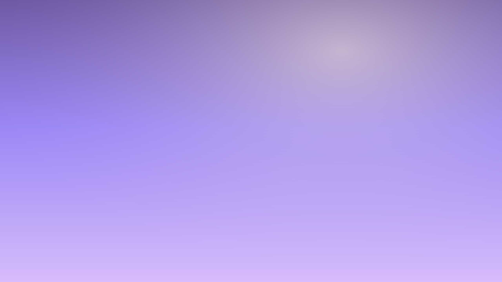

Tema de área de trabalho inspirado no macOS Big Sur, para Windows 10/11 e Linux. Reversível — o instalador guarda o estado anterior antes de mudar qualquer coisa.
Sem -Dark aplica a variante clara. Para
desfazer: .\uninstall.ps1
GNOME, Cinnamon, MATE, XFCE e KDE. Para desfazer:
./uninstall.sh
A mesma fonte que os instaladores usam:
shared/palette.json
Gradientes gerados por código, incluídos no repositório.
